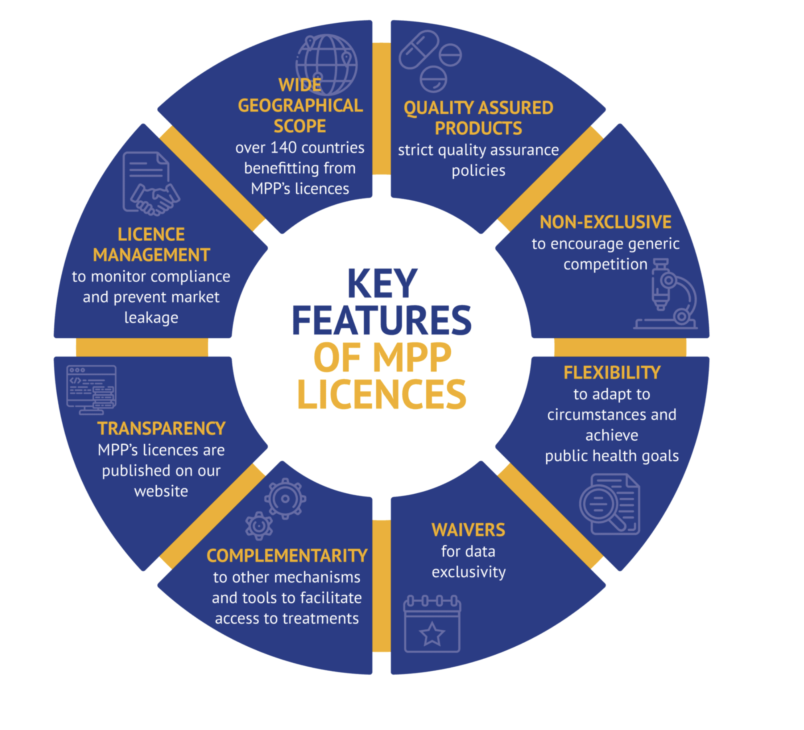

Medicines Patent Pool
The Medicines Patent Pool (MPP) is a United Nations-backed public health organisation working to increase access to, and facilitate the development of, life-saving medicines for LMICs. Through its innovative business model, MPP partners with civil society, governments, international organisations, industry, patient groups, and other stakeholders, to prioritise and license needed medicines and pool intellectual property to license the generic manufacture and the development of new formulations in developing countries.
How does it work? MPP operates as a non-profit voluntary licensing mechanism through partnerships with originator pharmaceutical companies who develop innovative medications (i.e. more effective and less toxic) but are still patent protected.

Figure 4. How the Medicines Patient Pool licences medicines for public health.
MPP negotiates licences with patent holders (originator) and sub-licenses rights to manufacture and distribute the drug in the country of interest to generic manufacturers, sometimes in exchange for royalties to the original innovator. In turn, the MPP ensures that the drugs are appropriately registered in the country, their is adequate competition for production of the medication (to keep prices low and prevent a monopoly), and promotes rapid uptake and utilization in the health through communication and agreements with governmental, medical and patient advocacy groups.
The advantages of the MPP model are three fold:
- Innovators have their drug manufactured and distributed in LMICs using a proven mechanism with oversight working with established and reputable generic manufacturers and receive royalty payments
- Generic companies have access to manufacture and distribute innovative medicines that are still on patent
- Patients get access to affordable and more effective medications that saves lives

Figure 5. How the Medicines Patient Pool licences medicines for public health.
For an excellent explanation of the how the Medicine Patent Pools works, see this explanation by Dr. Greg Martin: https://www.youtube.com/watch?v=FnVJPQ1ZINw
MPP and COVID-19
The MPP created a mRNA Vaccine Technology Transfer Hub in July 2021. The purpose of the hub is to increase access to mRNA vaccines made closer to home by establishing manufacturing capacity in Africa using a technology transfer hub model to ensure sustainable vaccine security in future pandemics. The first COVID-19 mRNA vaccine technology transfer hub has been established in South Africa. The MPP has also erntered into license agreements agreements for Merck’s molnupiravir and Pfizer ritonavir/nirmatrelvir oral COVID-29 therapies. The MPP has also licensed an ELISA antibody technology for serolgic testing
MPP and HIV
Today, only a third of the people requiring treatment for HIV/AIDS have access to therapy. Drug resistance means that new drugs are required to treat the condition, but these are often unaffordable for the most affected regions. The MPP has signed agreements with ten patent holders for 13 HIV antiretrovirals and a technology for injectable long-acting HIV drug combination technology. This urgently-need antivirals are now being distributed at affordable prices in some of the hardest-hit regions by HIV.
MPP and Hepatitis C
Around 58 million people live globally with HCV, many of them in LMICs, with the vast majority remaining undiagnosed and untreated. New direct-acting antivirals (DAA) that are effective across all major HCV strains can cure millions. Yet, approximately 84% of the people infected with HCV are not receiving treatment Around 290,000 people die each year from hepatitis C, mostly from cirrhosis and liver cancer. Direct-acting antiviral medicines can cure more than 95% of patients. The MPP works with generic partners to speed the development and distribution of these new treatments that can eliminate the virus through a short course of oral therapy in regions with a high HCV burden.
MPP signed licence agreements for three hepatitis C treatments: daclatasvir (DAC) in 2015, ravidasvir (RAV) in 2017 and glecaprevir/pibrentasvir (G/P) in 2018.
MPP has also secured licenses for tenofovir disoproxil fumarate (TDF) and tenofovir alafenamide (TAF), benefit people living with HIV as well as people living with chronic hepatitis B, a disease affecting 296 million globally. The majority of people with hepatitis B live in low- and middle-income countries.
Tuberculosis
Tuberculosis (TB) is a global pandemic affecting around 10 million people worldwide. In 2018, the disease caused 1.5 million deaths, and it is the leading killer of people living with HIV. Almost 90% of TB deaths occur in low- and middle-income countries. The World Health Organization’s post-2015 Global TB Strategy sets ambitious targets aimed at reducing TB deaths by 95% between 2015 and 2035, and to end TB. To meet these targets, faster acting, better therapies to treat TB are urgent, particularly for multidrug-resistant TB (MDR-TB). The MPP’s focus is to secure access to new treatments for MDR-TB and drug-susceptible tuberculosis. Th MPP also facilitates the development of new regimens by licensing TB drugs that are still under development. In early 2017, MPP signed its first agreement with the Johns Hopkins University. This agreement was to facilitate the clinical development of sutezolid, a promising investigational treatment for tuberculosis. It was followed by a second agreement with Pfizer in October 2019 to access Pfizer’s preclinical, phase I and phase IIa clinical study data and results on sutezolid.
Is the Medicines Patient Pool Working?
As of December 2021, the MPP has signed agreements with 13 patent holders for thirteen HIV antiretrovirals, one HIV technology platform, three hepatitis C direct-acting antivirals, a tuberculosis treatment, two long-acting technologies, two experimental oral antiviral treatments for COVID-19 and a COVID-19 serological antibody diagnostic test. 25 generic manufacturers and product developers have now signed MPP sub-licensing agreements.
Generic competition is making a difference in fostering lower prices and improving treatment coverage. Generic partners have distributed 49.71 million patient-years of HIV and hepatitis C products, saving international purchasers USD 920 million (January 2012-December 2020).

Figure 6. Impact of the Medicines Patent Pool. Source: medicinespatentpool.org